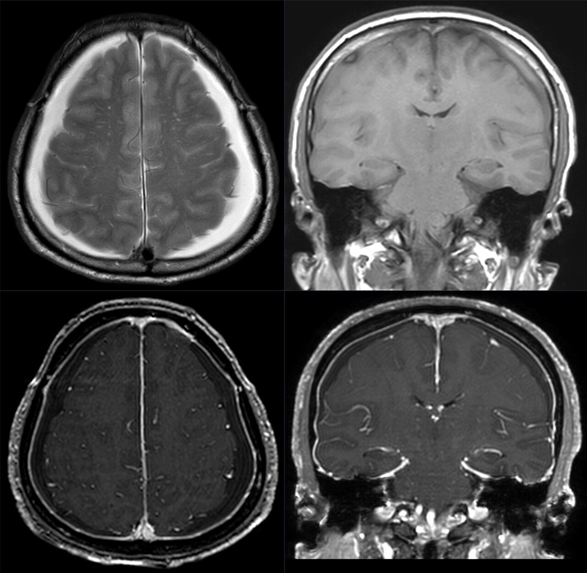

Ficha del catálogo
Hipotensión intracraneal espontánea
- Sistema
- Nervioso
- Modalidad
- RM
- Región
- Encéfalo, duramadre y raquis
- Dificultad
- Avanzado
La hipotensión intracraneal espontánea se debe a una fuga de líquido cefalorraquídeo por un defecto de la duramadre raquídea, con frecuencia asociado a un divertículo meníngeo o a un espolón discal. Produce cefalea de características posturales que empeora en bipedestación y mejora en decúbito, junto con acúfenos, náuseas y a veces diplopía.
Técnica
Resonancia magnética de encéfalo con contraste y estudio de todo el raquis con secuencias muy potenciadas en T2 para buscar colecciones extradurales. La mielografía por tomografía o por resonancia localiza el punto de fuga cuando se plantea tratamiento dirigido.
Qué observar
- Realce paquimeníngeo difuso, liso y continuo en la convexidad y en el tentorio
- Ingurgitación de los senos venosos durales y de las venas cerebrales
- Aumento de tamaño y convexidad de la hipófisis
- Descenso de las estructuras de la línea media con estrechamiento de las cisternas
- Colecciones subdurales bilaterales de escasa densidad y sin trauma
- Colección líquida extradural en el raquis que indica la fuga
Hallazgos
El hallazgo más constante es el realce paquimeníngeo difuso, fino, liso y sin nódulos, que afecta la convexidad y el tentorio de forma bilateral. Se acompaña de ingurgitación venosa, de aumento del volumen hipofisario, de reducción de las cisternas de la base y de descenso de las amígdalas cerebelosas, conjunto que reproduce un aspecto de encéfalo desplazado hacia abajo. Con frecuencia hay higromas o colecciones subdurales bilaterales. En el raquis puede verse líquido extradural que rodea el saco tecal.
Perlas
Un realce paquimeníngeo difuso y liso en un paciente con cefalea postural debe orientar a esta entidad y no a una meningitis, porque en la infección el realce es leptomeníngeo y sigue los surcos. Es un error frecuente drenar las colecciones subdurales sin tratar la fuga, ya que estas recidivan mientras el defecto dural persista.
Diagnóstico diferencial
- Meningitis
- Realce leptomeníngeo que rellena los surcos, con fiebre y alteración del líquido cefalorraquídeo.
- Carcinomatosis meníngea
- Realce nodular e irregular, con afectación de pares craneales y contexto oncológico.
- Hematoma subdural crónico primario
- Suele ser asimétrico y con antecedente traumático, sin realce paquimeníngeo difuso ni desplazamiento caudal del encéfalo.
- Malformación de la unión craneocervical
- El descenso amigdalar es crónico y puntiagudo, sin realce dural ni ingurgitación venosa.
Simuladores
- Realce dural fisiológico fino tras punción lumbar reciente
- Engrosamiento dural posquirúrgico o tras colocación de derivación
- Hipófisis prominente fisiológica en mujeres jóvenes
Por modalidad
- TC
- Detecta las colecciones subdurales y es la base de la mielografía cuando se busca localizar la fuga.
- RM
- Muestra el conjunto de signos craneales y, en el raquis, la colección extradural que confirma la pérdida de líquido.
Protocolo
Encéfalo con T1 volumétrico tras contraste y sagitales de la línea media, seguidos de estudio de todo el raquis con secuencias muy potenciadas en T2 y supresión grasa; si se plantea parche o cirugía se realiza mielografía dirigida para localizar el punto exacto de la fuga.
Clasificación
Errores frecuentes
- Confundir el realce paquimeníngeo con meningitis e iniciar tratamiento antibiótico
- Drenar colecciones subdurales sin buscar ni tratar la fuga de líquido cefalorraquídeo
- Limitar el estudio al encéfalo y no explorar el raquis

hipotensión intracraneal cefalea postural realce paquimeníngeo fuga de líquido cefalorraquídeo higroma subdural mielografía